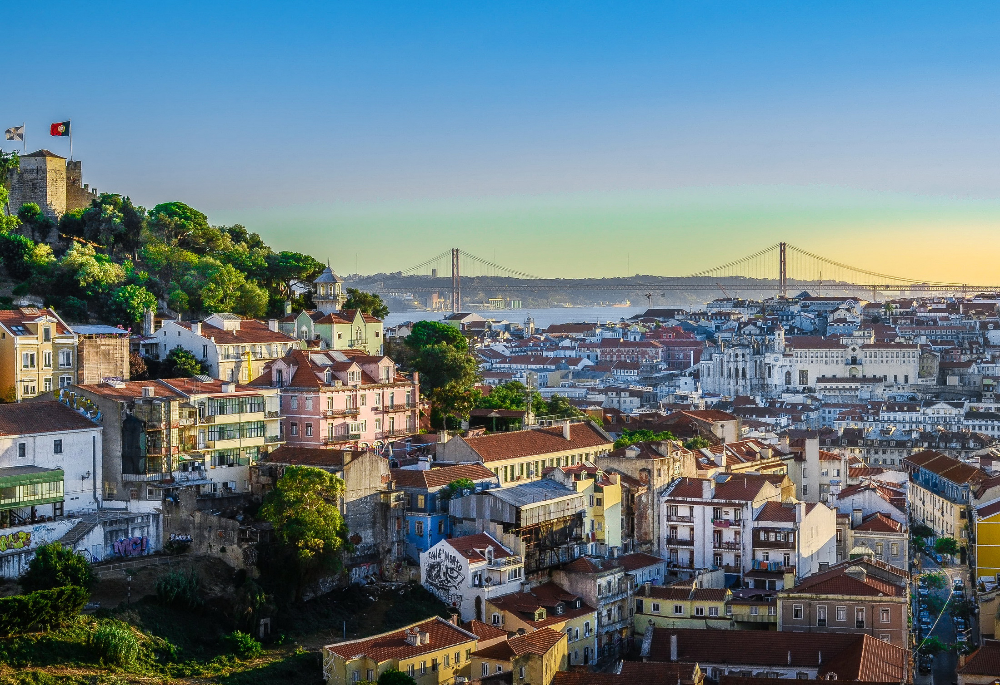

Lisbon is a city that earns its affection quietly. Draped across seven hills above the wide mouth of the Tagus River, it is compact enough to explore on foot yet rich enough in detail to reward weeks of wandering. It is one of Europe's oldest capitals and, in many ways, one of its most unhurried.
Lisbon combines a deep sense of history with a relaxed, sun-warmed atmosphere that few European cities can match. It is walkable, beautiful, and genuinely welcoming.
Lisbon's architecture tells the story of a city that once connected the world. Manueline towers, Pombaline grids, and Moorish-influenced hilltop districts layer over each other in a city that has survived earthquakes, reinvention, and time.
Lisbon's bairros each have a distinct mood and history. Moving between them — often up and down steep hills or aboard a vintage tram — is itself a pleasure.
Lisbon has a cultural identity shaped by its position at the edge of Europe and its history as a seafaring empire. Fado — mournful, beautiful, and uniquely Portuguese — is the city's most distinctive art form. Beyond music, Lisbon has strong traditions in visual arts, tile-making, and contemporary design.
Portuguese food is honest, seasonal, and deeply satisfying. Salt cod in dozens of preparations, grilled sardines in summer, pastéis de nata from the famous Pastéis de Belém, and wine that punches well above its fame. Lisbon's food culture rewards those who eat where the locals eat — small tascas with handwritten menus and no tourist mark-up.
Lisbon has a particular quality of light — warm, golden, reflected off the river and the pale stone of its buildings. The pace is slower than most capitals. Saudade — the Portuguese concept of a bittersweet longing — runs quietly through the city's character. It is a place that makes you feel welcome without trying too hard.
Lisbon is a city that grows on you. Its pleasures are not loud — they are found in a good coffee at a corner café, a view from a miradouro at dusk, a fado song heard through an open window. It is one of Europe's most quietly extraordinary places.